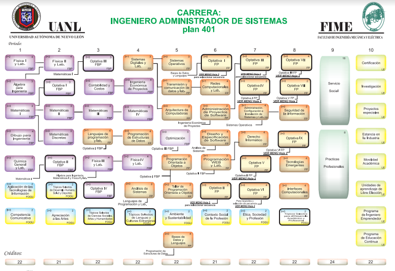

Esta carrera se encuentra en la Facultad de Ingeniería Mecánica y Eléctrica básicamente se basa en configurar y mantener tanto la red como el sistema informático utilizados en el entorno laboral, supervisando su correcto funcionamiento.
Tener un razonamiento lógico y capacidad de abstracción, tener gusto y aptitud para las ciencias exactas (Matemáticas, Física y Química). Destreza para resolver problemas aplicando las ciencias exactas, capacidad de análisis y síntesis. Habilidad para trabajar en equipos multidisciplinarios, capacidad de liderazgo y facilidad de adaptación a cambios sociales, culturales y tecnológicos, imaginación, inventiva, originalidad, con un alto sentido humanista y comprometidos con el cuidado del medio ambiente.
Haber concluido satisfactoriamente el nivel medio superior o equivalente.
Los que establezca la normatividad y procedimientos vigentes de la UANL u otros en caso de que apliquen.
El alumno deberá someterse al examen de Concurso de Ingreso establecido por la UANL, EXANI-II. Módulo de Selección y Módulo de diagnóstico: Ingenierías y Tecnología.
Una vez seleccionado, el estudiante participará en el curso de inducción y curso propedéutico que se imparte en la Facultad de Ingeniería Mecánica y Eléctrica.
Formar Ingenieros en Administración de Sistemas competentes en el desarrollo de aplicaciones de software, que aporten y administren soluciones integrales e innovadoras, para la toma de decisiones, promoviendo la investigación y el desarrollo tecnológico; con una formación integral orientada a satisfacer las necesidades de la sociedad en el área de las tecnologías de la información.
El egresado del programa educativo de Ingeniero Administrador de Sistemas posee competencias para el desarrollo, integración y gestión de software para el sector industrial y de servicios, aplicando modelos y soluciones bajo estándares de calidad y seguridad en un ambiente multidisciplinario con un compromiso ético, profesional y humano.
